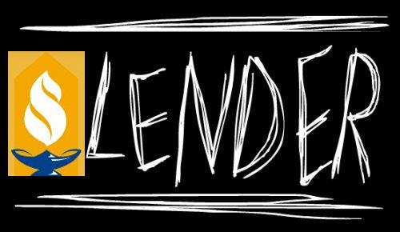

Portfolio
ΞNIGMΛ
ΞNIGMΛ is a code-breaking puzzle game where you compete against other players to win real money. Users register for free and are given one clue to start. This clue leads them to other clues which eventually lead to a final answer which they input on the home screen. The first user to enter the correct answer wins the game and wins real money. I developed ΞNIGMΛ during the summer of 2019.
Technologies used: ▼
Technologies used: ▼
- HTML/CSS/JavaScript with BootStrap and jQuery for website frontend
- PHP and MySQL for website backend
The Netflix Prize
During the summer of 2017 and 2018, I had the opportunity to conduct research with Dr. Michael Lamar and another student at Centre College. During this research project, we developed and implemented a statistical learning model applied to the Netflix Prize problem. We applied the Co-Occurance Data Embedding (CODE) algorithm to the Likert-scale data of the Netflix Prize. We learn an embedding of the users and movies, and use this embedding to make a prediction on a user's rating of a movie. The algorithm is fast, simple, and intuitive, and the predictions it makes match those of other more complex approaches.
Technologies used: ▼
Technologies used: ▼
- C++
MatH2O
MatH2O is a website that I developed with a classmate as a summer project. The goal is to allow users to answer mathematics multiple choice questions of varying subject and difficulty, from pre-algebra and geometry up to statistics and calculus. A percentage of revenue is donated to charity: water, a charity that focuses on clean water projects in developing countries.
Technologies used: ▼
Technologies used: ▼
- HTML/CSS/JavaScript with BootStrap and jQuery for website frontend
- PHP and MySQL for website backend
TubeMaster Database Application
I worked with a team of students in our Database Systems class to develop an application for TubeMaster, a real-life client in Louisville, KY. We designed the database and implemented the application using PostgreSQL and PHP.
Technologies used: ▼
Technologies used: ▼
- Google Cloud Platform
- HTML/CSS with Bootstrap for website frontend
- PHP for website backend
- PostgreSQL
Department Assessment Project
I worked with a team of students in our Software Engineering class to develop a tool which simplifies and standardizes the yearly assessment report for each of the major departments at Centre College.
Technologies used: ▼
Technologies used: ▼
- HTML/CSC/JavaScript with Bootstrap for website frontend
- Angular
- Node.js with Express
- MongoDB
AI Projects
In my "Artificial Intelligence" class (CSC 339), we explored many topics of AI, such as A* and other search techniques, boolean satisfiability (SAT) and SAT solvers, Bayesian networks, and more. We had projects due approximately every two weeks. I did all of these projects in Java, but we were allowed to use any language we wanted to.
Technologies used: ▼
- Modeling and solving the game Back2Back using A*
- Writing my own SAT solver, using both DPLL and WalkSAT
- Reducing hexidecimal Sudoku to SAT and solving it using a SAT solver
- Writing a Bayesian network
- Writing a 2x2 Rubiks cube solver using A*
Technologies used: ▼
- Java
- SAT4J, a SAT solver written in Java
Machine Learning Projects
In my "Statistical Modeling" (MAT 205) and "Machine Learning" class (CSC 420), we learned the theory behind several mathematical machine learning models, Regression and Logistic Regression, Naïve Bayes, k-Nearest Neighbors, Support Vector Machines, Neural Networks, and others. We also had several projects to apply these concepts to real-world data. I have included these projects and some others that I explored on my own here.
Technologies used: ▼
Technologies used: ▼
- R/R-Studio
- Python
- scikit-learn
- Keras
Dungeon Adventure Game
This is my final project for my "Software Development" class (CSC 300). It is a first person game set in a dungeon. There are monsters and items you can pick up, such as heatlth potions and weapons. The class worked on this project for a solid amount of the semester, with weekly deadlines of what work was to be done by that time.
Technologies used: ▼
Technologies used: ▼
- Java
Word Predictor Program
This is my final project for my "Data Structures and Intermediate Programming" class (CSC 223). It reads in a large amount of text from a file (we used the full text of Moby Dick), then lets you enter letters, and based on the frequency of matching words in the book, tries to predict your word.
Technologies used: ▼
Technologies used: ▼
- Java
CSGO Win Big
CSGO Win Big was a gambling website for skins in the game Counter-Strike: Global Offensive. It worked by signing in through Steam, a video game service, then trading the items you want to gamble to a bot account. The more items you put in, the better chance you have to win. Once two people deposit, a timer starts for two minutes, and at the end, a winner is randomly chosen, and they get all of the skins in the pot. Over $4,000 worth of skins went through the site, and over 1300 rounds were played. In the end, I had to shut this site down, because some other, bigger betting sites were scamming users and promoting underage gambling, so Valve decided to shut all betting sites down.
View images of the site here
Technologies used: ▼
View images of the site here
Technologies used: ▼
- HTML/CSS/JavaScript with BootStrap and jQuery for website frontend
- PHP, MySQL, and Steam Login API for website backend
- C# on AWS EC2 instance for bot handling trades
Music Player
This is a web-based music player I created. I made it with the intention of bringing all the big music platforms together. A lot of people, myself included, use many sites and platforms for their music: YouTube, SoundCloud, and they have music on their own computer. This music player lets you add songs from any of these three, and play them seamlessly in your own playlists. The fact that it is web-based makes it easy to use from anywhere - you just login on any computer and all your music is right there.
Technologies used: ▼
Technologies used: ▼
- HTML/CSS/JavaScript with BootStrap and jQuery for website frontend
- PHP and MySQL for website backend
- YouTube and SoundCloud embedded JavaScript API
Sayre Blue Gold
Sayre Blue Gold is a website I developed with a classmate for an independent study at my high school. It is a website for hosting the WSMS podcast that the school puts out.
Technologies used: ▼
Technologies used: ▼
- HTML/CSS/JavaScript with BootStrap and jQuery for website frontend
- PHP and MySQL for website backend
Sayre Slender
Sayre Slender is a remake of the original "Slender: The 8 Pages" game, based in my high school. I made it using the Unity Game Engine. I modeled the school in Google Sketchup, then imported it into Unity and coded it. This was one of my earlier projects; I made this during my sophomore year of high school, before I had even taken any formal computer science classes. It was very popular within the school, and was picked up by a couple of YouTube channels, who uploaded videos here and here
Download for PC or Mac
Technologies used: ▼
Download for PC or Mac
Technologies used: ▼
- Sketchup for modeling of school
- Unity with JavaScript (UnityScript) for the game itself
